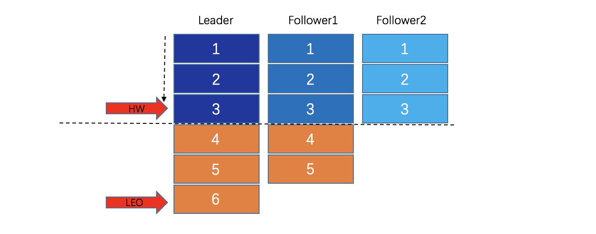

- 01 开篇词：从中间件开始学习分布式.md.html
- 02 走进分布式中间件（课前必读）.md.html
- 03 主流分布式缓存方案的解读及比较.md.html
- 04 分布式一致性协议 Gossip 和 Redis 集群原理解析.md.html
- 05 基于 Redis 的分布式缓存实现及加固策略.md.html
- 06 Redis 实际应用中的异常场景及其根因分析和解决方案.md.html
- 07 Redis-Cluster 故障倒换调优原理分析.md.html
- 08 基于 Redis 的分布式锁实现及其踩坑案例.md.html
- 09 分布式一致性算法 Raft 和 Etcd 原理解析.md.html
- 10 基于 Etcd 的分布式锁实现原理及方案.md.html
- 11 主流的分布式消息队列方案解读及比较.md.html
- 12 搭建基于 Kafka 和 ZooKeeper 的分布式消息队列.md.html
- 13 深入解读基于 Kafka 和 ZooKeeper 的分布式消息队列原理.md.html
- 14 深入浅出解读 Kafka 的可靠性机制.md.html
- 捐赠
14 深入浅出解读 Kafka 的可靠性机制
1. 副本机制
在分布式系统中，为了提高可靠性，最常用、最有效的策略是“副本机制”，Kafka 也不例外。Kafka 为每个 Partition 维护了一个 AR（Assigned Replicas）列表，由 ISR（In-Sync Replicas，与 Leader 数据同步的 Replica）和 OSR（Outof-Sync Replicas，与 Leader 数据不同步的 Replica）组成。初始状态下，所有的 Replica 都在 ISR 中，但在 Kafka 工作过程中，由于各种问题（网络、磁盘、内存）可能导致部分 Replica 的同步速度慢于参数 replica.lag.time.max.ms 指定的阈值，一旦出现这种情况，这部分 Replica 会被移出 ISR，降级至 OSR 中。
关于参数 replica.lag.time.max.ms
数据类型为 Long，默认值为 10000，重要性为 High，官方解释如下：
If a follower hasn’t sent any fetch requests or hasn’t consumed up to the leaders log end offset for at least this time, the leader will remove the follower from ISR.
副本机制如何作用？
Producer 指定 Topic 向 Broker 发送消息，经过内部处理（如负载均衡等）后写入某 Partition 的 Leader，Leader 收到消息数据后并不会立即回应 Producer，而是等待 ISR 列表中所有的 Replica 同步数据完成，之后才向 Producer 返回成功消息。这是不是与 Raft 算法有点类似？
基于上述分析，不难理解，只要保证 ISR 中的 Replica 数量大于 2（ISR 包括 Leader），即便出现 Leader 突然故障下线的情况，也能保证消息不丢失（因为 ISR 中的 Replica 与 Leader 保持同步）。当然，凡事过犹不及，ISR 中 Replica 的数量不宜过多，否则会降低 Kafka 的吞吐性能。
补充一点，OSR 内的 Replica 是否同步了 Leader 的数据不影响数据是否提交成功，这些 Replica 会不断从 Leader 中同步数据。至于同步的进度并不重要，不过，运维人员应密切关注 Replica 从 ISR 中降级转入 OSR 的情况，并及时排查故障，使其尽快回到 ISR 中，以维持 ISR 中 Replica 的数量处于合理状态，同时降低集群宕机的风险。
2. 截断机制
在第 12 课中，我们介绍了 LEO 和 HW 在正常情况下的流转过程，那遇到异常情况又会怎样呢？
如果出现 Leader 故障下线的情况，就需要从所有的 Follower 中选举新的 Leader，以便继续提供服务。为了保证一致性，通常只能从 ISR 列表中选取新的 Leader （上面已经介绍，ISR 列表中的 Follower 与原 Leader 保持同步），因此，无论 ISR 中哪个 Follower 被选为新的 Leader，它都知道 HW 之前的数据，可以保证在切换了 Leader 后，Consumer 可以继续“看到”之前已经由 Producer 提交的数据。
如下图所示，如果 Leader 宕机，Follower1 被选为新的 Leader，而新 Leader （原 Follower1 ）并没有完全同步之前 Leader 的所有数据（少了一个消息 6），之后，新 Leader 又继续接受了新的数据，此时，原本宕机的 Leader 经修复后重新上线，它将发现新 Leader 中的数据和自己持有的数据不一致，怎么办呢？
为了保证一致性，必须有一方妥协，显然旧的 Leader 优先级较低，因此， 它会将自己的数据截断到宕机之前的 HW 位置（HW 之前的数据，与 Leader 一定是相同的），然后同步新 Leader 的数据。这便是所谓的 “截断机制”。

3. 消息生产的可靠性
3.1 消息可能重复生产
在第 12 课 2.4 小节中，我们介绍了消息生产过程中保证数据可靠性的策略。该策略虽然可以保障消息不丢失，但无法避免出现重复消息。例如，生产者发送数据给 Leader，Leader 同步数据给 ISR 中的 Follower，同步到一半 Leader 时宕机，此时选出新的 Leader，它可能具有部分此次提交的数据，而生产者收到发送失败响应后将重发数据，新的 Leader 接受数据则数据重复。因此 Kafka 只支持“At Most Once”和“At Least Once”，而不支持“Exactly Once”，消息去重需在具体的业务中实现。
- At Most Once：消息可能会丢，但绝不会重复传输；
- At Least Once：消息绝不会丢，但可能会重复传输；
- Exactly once：每条消息肯定会被传输一次且仅传输一次。
3.2 配置示例
综上所述，对高可靠性有要求的应用场景中，生产者的配置示例如下。
Broker 配置：
default.replication.factor=3
min.insync.replicas=2
``
Producer 配置：
roperties props = new Properties();
props.put(“bootstrap.servers”, “100.120.130.170:9092,100.120.130.171:9092, 100.120.130.172:9092”);
props.put(“acks”, “all”); //保证高可靠性，设置成”all”或者”-1”
props.put(“retries”, 3); //重试次数阈值，这里设置为3
props.put(“key.serializer”, “org.apache.kafka.common.serialization.StringSerializer”); //这里是key的序列化类
props.put(“value.serializer”, “org.apache.kafka.common.serialization.StringSerializer”);//这里是value的序列化类
Producer
### 4. 消息发送的可靠性
Kafka 新版 Java 客户端（Kafka Clients 2.0.0）使用异步方式发送消息，即消息提交给 Kafka Producer 的 send 方法，实际上将该消息放入了它本身的一个后台发送队列，之后由一个后台线程不断地从队列中取出消息并发送，消息发送成功后会回调 send 方法的 callback（如果存在就调用）。
#### 4.1 参数 `batch.size`
当多条消息的目标 Partition 相同时，Producer 会尝试将它们组装成一个批量消息，以便减少请求的数量，有助于提升客户端和服务器的性能。批量消息的大小由参数 `batch.size` 控制。
> **关于 batch.size**
>
> batch.size 为 Int 型，默认值为 16384，单位是字节，即默认大小 16KB，官方解释如下：
>
> The producer will attempt to batch records together into fewer requests whenever multiple records are being sent to the same partition. This helps performance on both the client and the server. This configuration controls the default batch size in bytes.
**注意：** 参数 `batch.size` 不宜过大或过小，过大浪费内存，过小则有可能降低吞吐量（大小为零将完全禁用批处理）。
#### 4.2 参数 `linger.ms`
在批处理模式下，如果消息到达的速度比后台线程发送到 Partition 的速度快，则会出现消息堆积的问题。不过，在某些情况下，客户端可能通过添加人工延迟来减少请求数量，也就是说，生产者将等待给定延迟后才允许发送其它消息，这样可以将待发送的消息批量处理，而不是立即发送。这种处理方式类似于 TCP 中的 Nagle 算法。人工延迟由参数 `linger.ms` 控制。
> **关于 linger.ms**
>
> `linger.ms`为 Long 型，默认值为 0，单位为毫秒。
`linger.ms` 设置批处理延迟上限时，请注意，一旦我们得到一个分区的 `batch.size` 值的记录，它将立即发送，而不管该设置如何；但如果这个分区的累积字节数少于 `batch.size`，我们将“逗留”指定的等待时间，到达 `linger.ms` 指定的延迟后，即使累积的消息字节数少于 `batch.size`，也会发送。
linger.ms 默认为 0（即没有延迟）。例如，设置 `linger.ms=5` 将具有减少发送请求数量的效果，但在没有负载的情况下发送记录，将增加高达 5ms 的延迟。
#### 4.3 参数 `buffer.memory` 和 `max.block.ms`
4.2 节提到了发送方消息堆积的问题，当程序的发送速率大于后台线程发送到 Broker 的速率时，生产的消息会在发送方堆积，为此 Kafka 提供了相应的堆积控制策略，主要涉及到的参数有 `buffer.memory` 和 `max.block.ms`。
**参数 buffer.memory**
> **关于 buffer.memory**
>
> `buffer.memory` 为 Long 型，默认值为 33554432，单位为字节，即默认大小为 32MB。
根据官网解释，我们来了解下该参数。Producer 可以用来缓冲等待发送给服务器的消息的总字节数。如果消息的发送速度快于传送到服务器的速度，那么缓冲区将被占满，之后 Producer 将阻塞 `max.block.ms`，随后将抛出异常。`buffer.memory` 的大小大致与 Producer 可使用的总内存相对应，但不是硬绑定，因为并非 Producer 使用的所有内存都用于缓冲。一些额外的内存将用于压缩（如果启用压缩）以及维护等请求。
**参数 max.block.ms**
> 关于 `max.block.ms`
>
> `max.block.ms` 为 Long 型，默认值为 60000，单位为毫秒，即大小为 60s。
在 `buffer.memory` 指定的缓存被占满后，Producer 相关的方法可阻塞的最大时间由 `max.block.ms` 控制，之后将抛出异常。比如，`KafkaProducer.send()` 和 `KafkaProducer.partitionsFor()`。注意，用户提供的序列化器或分区器中的阻塞将不计入该超时。
#### 4.4 参数 retries
Producer 发送消息存在失败的可能，比如，目标 Partition 对应的 Leader 突然故障。因此，为了保证可靠性，发送消息具有“重试机制”，由参数 retries 控制，如下：
> **关于 retries**
>
> retries 为 Int 型，默认值为 0，官方解释如下：
>
> Setting a value greater than zero will cause the client to resend any request that fails with a potentially transient error.
部分场景下，为了“绝对可靠”，会将失败重试的次数设置为一个很大的数值，如 `Integer.MAX_VALUE`。
#### 4.5 消息异步转同步
Kafka 新版 Java 客户端使用的是异步方式发送消息，有时候需要将“异步转同步”，使用 `future.get()` 等待消息发送返回结果，代码如下：
Future
RecordMetadata metadata = future.get(); //等待发送结果返回
当然，上述方法比较简单但也很粗暴，可能导致性能下降，因此，一般通过 `send(message,callback)` 的方式，如果消息发送失败，可通过 callback 记录失败并处理。如下所示：
producer.send(record, new Callback() {
public void onCompletion(RecordMetadata recordMetadata, Exception e)
{
if (null != e)
{
System.out.println("send error" + e.getMessage());
}
else
{
System.out.println(String.format("offset:%s,partition:%s",recordMetadata.offset(),recordMetadata.partition()));
}
}
});
#### 4.6 避免消息重排序
4.1 小节中已经提到，Kafka 默认情况下对消息进行批量发送。
该方式存在一个潜在问题，假设有两个批量消息的目标 Partition 相同，先后顺序为 T1、T2，当它们先后发送到 Broker 上的目标 Partition 时，T1 对应的批量消息因某种原因发送失败，T2 则成功；之后，由于重试机制的保障，T1 重试发送成功；但是，两个批量消息到达的顺序变成了 T2、T1。对于某些对消息顺序敏感的应用场景，这是很危险的。
为了解决上述场景的问题，Kafka 提供了一个参数 `max.in.flight.requests.per.connection`，通过它，客户端可以设置在单个连接上发送的未确认请求的最大数目。如果设置大于 1，并且发送失败，则存在由于重试（如果启用了重试机制）而导致消息重新排序的风险。
> **关于 max.in.flight.requests.per.connection**
>
> 该参数为 Int 型，默认值为 5，官方介绍如下：
>
> The maximum number of unacknowledged requests the client will send on a single connection before blocking. Note that if this setting is set to be greater than 1 and there are failed sends, there is a risk of message re-ordering due to retries (i.e., if retries are enabled).
综上所述，如果启用了重试机制，即 `retries >0`，为了规避**消息被重新排序**的风险，修改默认设置如下：
max.in.flight.requests.per.connection = 1
#### 4.7 配置示例
`batch.size`、`buffer.memory`、`max.block.ms` 一般采用默认值即可，`linger.ms` 根据需要自行配置，在此，举一个简单的配置示例：
Properties props = new Properties(); props.put(“bootstrap.servers”, “100.120.160.170:9092,100.120.160.171:9092, 100.120.160.172:9092”); props.put(“acks”, “all”); // 高可靠性要求则应该设置成”all” props.put(“retries”, Integer.MAX_VALUE); //启用重试机制 props.put(“max.in.flight.requests.per.connection”,1); //避免消息重排序 props.put(“key.serializer”, “org.apache.kafka.common.serialization.StringSerializer”); //这里是key的序列化类 props.put(“value.serializer”, “org.apache.kafka.common.serialization.StringSerializer”);//这里是value的序列化类
Producer
for (int i = 0; i < 1000000; i++) {
Future
RecordMetadata metadata = future.get(); //等待发送完成
} // 关闭，释放资源 producer.close();
### 5. 消息接收的可靠性
Kafka 的 Java 客户端 Kafka Clients，自版本 0.10.0.0 起，接收消息的线程更改为单线程。同时，对于 Consumer 的 Offset，默认情况下，客户端采用的是自动提交模式，由参数 `enable.auto.commit` 控制，如下：
enable.auto.commit: boolean型，默认值True，官方介绍： If true the consumer’s offset will be periodically committed in the background.
默认的自动提交模式存在潜在风险：可能导致消息丢失。比如客户端接收到一批消息并进行处理，在处理过程中，客户端 Offset 定时提交的时间点到达，这批消息的 Offset 被提交。但是，这批消息可能尚未处理完毕，更严重的是，处理过程中可能出现异常或错误，甚至是宕机。这时，尚未处理的消息将会丢失。Offset 已经提交，但实际上并未成功地被处理，Consumer 下次 Pull 消息时将从新的 Offset 处读取。
基于上述分析，为了保证消息接收的可靠性，通常将参数 `enable.auto.commit` 设置为 False，防止程序自动提交。
Consumer 配置示例：
Properties props = new Properties(); props.put(“bootstrap.servers”, “100.120.160.170:9092,100.120.160.171:9092, 100.120.160.172:9092”);//配置broker集群 props.put(“group.id”, “testsub1”);// 为consumer配置group props.put(“enable.auto.commit”, “false”); // 设置手动提交 props.put(“key.deserializer”, “org.apache.kafka.common.serialization.StringDeserializer”); props.put(“value.deserializer”, “org.apache.kafka.common.serialization.StringDeserializer”);
KafkaConsumer
consumer.subscribe(Arrays.asList(“test.testTopic”,“topic.test”));
while (true) {
ConsumerRecords<String, String> records = consumer.poll(Duration.ofSeconds(10));
for (ConsumerRecord<String, String> record : records)
{
System.err.printf("offset = %d, key = %s, value = %s%n", record.offset(), record.key(), record.value());
}
}
### 6. 消息存储的可靠性
Kafka 通过持久化消息到磁盘来保障消息存储的可靠性，但存在矛盾点：由于磁盘的 IO 瓶颈，过于频繁的“刷盘”会降低 Kafka 的性能。但是，“刷盘” 的时间间隔过长又存在消息丢失的风险，降低可靠性。鉴于此，写磁盘的策略需要平衡性能和可靠性。Kafka 提供了 `log.flush.interval.ms` 和 `log.flush.interval.messages` 两个参数来控制 Broker 的刷盘时机。
> **关于 log.flush.interval.ms**
>
> 该参数为 Long 型，默认值为 null，单位为 ms，用于控制日志刷盘的时间间隔，即每隔多长时间将消息刷到磁盘上。官方介绍如下：
>
> The maximum time in ms that a message in any topic is kept in memory before flushed to disk. If not set, the value in log.flush.scheduler.interval.ms is used.
>
> **关于 log.flush.interval.messages**
>
> 该参数为 Long 型，默认值为 9223372036854775807，用于控制日志刷盘的消息量，即每积累多少条消息后将消息刷到磁盘上。官方介绍如下：
>
> The number of messages accumulated on a log partition before messages are flushed to disk.
建议做如下配置：
#每当producer写入10000条消息时，刷数据到磁盘 log.flush.interval.messages=10000
#每间隔1秒钟时间，刷数据到磁盘 log.flush.interval.ms=1000
”`
参考文献
© 2019 - 2023 Liangliang Lee. Powered by gin and hexo-theme-book.